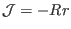
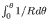
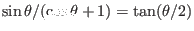
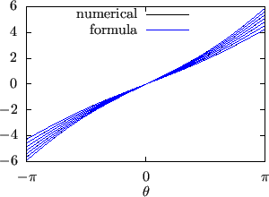

For the above magnetic field, the toroidal shift involved in the definition of
the generalized toroidal angle can be evaluated analytically. The toroidal
shift is given by
where the local safety factor can be written as
Using
 and
The local safety factor in Eq. (354) is written as
Using this, expression (353) is written
The integration
 can be evaluated explicitly
(using maxima), yielding
Then expression (357) is written
where use has been made of
. Using this, the generalized toroidal angle can be written as
The results given by the formula (359) are compared with the
results from my code that assumes a general numerical configuration. The
results from the two methods agree with each other, as is shown in Fig.
27, which provides confidence in both the analytical formula and
the numerical code.
Figure:
The results of
 computed by using formula
(359) and the numerical code agree with each other. The
different lines correspond to different magnetic surfaces.
computed by using formula
(359) and the numerical code agree with each other. The
different lines correspond to different magnetic surfaces.
|  |
yj
2018-03-09